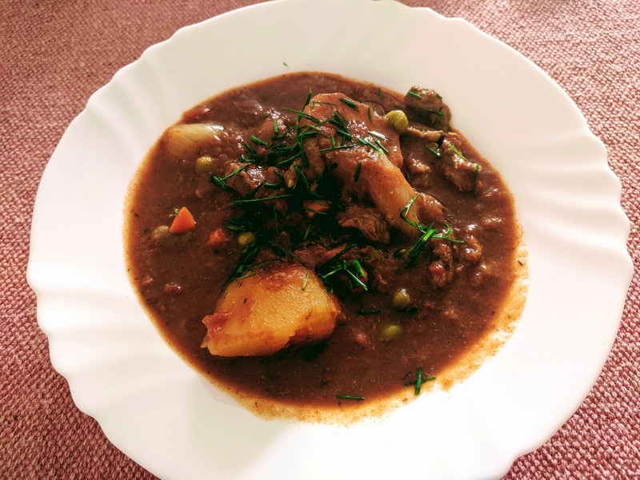

Receptů na úpravu hovězího masa už jsem vyzkoušela několik, ale nikdy mě výsledek neuchvátil natolik, abych měla chuť se k receptu ještě někdy vrátit. Tohle je historicky první opravdu povedený výsledek, který nám všem moc chutnal a nestydím se doporučit tento postup dál.
- 0,5 kg libového hovězího masa
- 1 lžíce rostlinného oleje
- 2 lžíce másla
- 1 nakrájená cibule
- 2 lžíce hladké mouky
- 1 lžička soli
- čerstvě namletý pepř
- 1 bobkový list
- 1 lžička drceného tymiánu
- 1 lžička majoránky
- 2 hrnky hovězího vývaru nebo vody
- 6 středních brambor
- 3 cibule
- 4 mrkve
- 2 petržele
- 2 plechovky rajčat
- 1 hrnek (mraženého) hrášku
- čerstvě nasekaná petrželka
Maso nakrájíme na kostičky. Ve velké pánvi/hrnci rozpálíme olej se lžící másla a osmažíme kostičky masa. Důležité je, aby se maso zatáhlo. Maso osmahlé dohněda odložíme stranou a do pánve přidáme další lžíci másla, na kterém osmahneme cibulku dozlatova. Pak přidáme hladkou mouku a osmažíme jíšku. Když je jíška světle hnědá, přidáme předem připravené maso, koření a zalijeme vývarem nebo vodou. Promícháme a vaříme na mírném ohni, než maso změkne, asi 1,5 hodiny. Poté přidáme oškrábané brambory překrojené na poloviny, mrkev a petržel na delší proužky a cibule vcelku, jen je lehce nařízneme u kořene do tvaru písmene X. Přidáme také pokrájená sterilovaná rajčata i s omáčkou. Přikryjeme pokličkou a dusíme na mírném ohni, než je zelenina měkká, asi 40 minut. Přidáme hrášek a vaříme posledních 5 minut. Posypeme čerstvě nasekanou petrželkou a podáváme.
